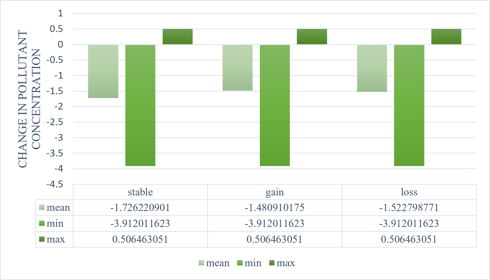
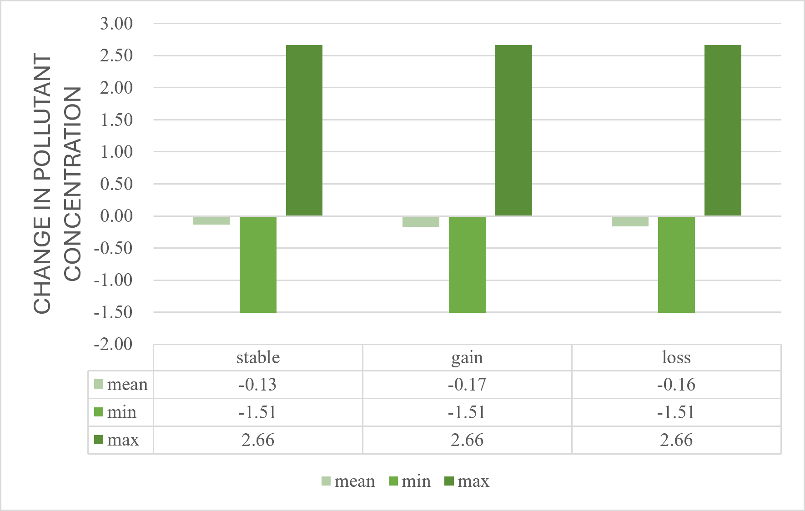
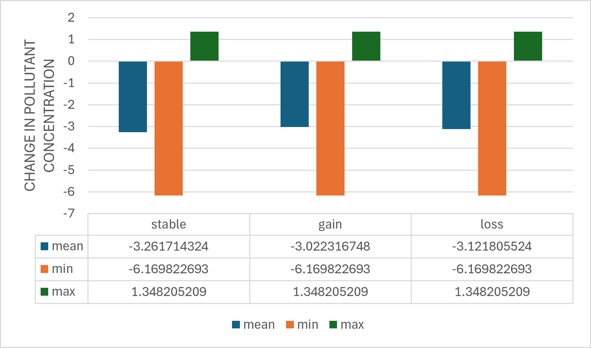

Land cover change, AMAC correlation, and population exposure assessment
Persistence, gain sources, and loss destinations · Area % from EPSG:3035 Bonus ✓
| Indicator | Value (Area %) | Value (Pixel %) | Category |
|---|---|---|---|
| Stability (Persistence) | 82.59% | 82.62% | — |
| Primary Source of Gain | 88.76% | 88.67% | Rangeland (11) |
| Secondary Source of Gain | 5.47% | 5.52% | Crops (5) |
| Tertiary Source of Gain | 5.37% | 5.42% | Built Area (7) |
| Primary Destination of Loss | 84.77% | 84.65% | Rangeland (11) |
| Secondary Destination of Loss | 8.00% | 8.08% | Crops (5) |
| Tertiary Destination of Loss | 7.03% | 6.99% | Built Area (7) |
Tree cover remained fairly stable from 2021 to 2023, with a persistence rate of 82.59%. Most tree gains came from rangeland, while most tree losses also became rangeland, suggesting mainly vegetation degradation or recovery rather than strong urban conversion.
| Indicator | Value (Area %) | Value (Pixel %) | Category |
|---|---|---|---|
| Stability (Persistence) | 93.46% | 93.48% | — |
| Primary Source of Gain | 37.48% | 37.70% | Trees (2) |
| Secondary Source of Gain | 35.24% | 35.07% | Rangeland (11) |
| Tertiary Source of Gain | 25.78% | 25.73% | Crops (5) |
| Primary Destination of Loss | 44.67% | 44.52% | Rangeland (11) |
| Secondary Destination of Loss | 29.43% | 29.63% | Trees (2) |
| Tertiary Destination of Loss | 24.33% | 24.29% | Crops (5) |
Built-up areas were the most stable class, with 93.46% persistence. New built-up areas mainly came from trees, rangeland, and crops, showing that urban expansion affected both natural and agricultural land.
| Indicator | Value (Area %) | Value (Pixel %) | Category |
|---|---|---|---|
| Stability (Persistence) | 88.62% | 88.60% | — |
| Primary Source of Gain | 78.83% | 78.53% | Rangeland (11) |
| Secondary Source of Gain | 13.98% | 14.25% | Trees (2) |
| Tertiary Source of Gain | 6.60% | 6.64% | Built Area (7) |
| Primary Destination of Loss | 73.18% | 73.03% | Rangeland (11) |
| Secondary Destination of Loss | 13.33% | 13.37% | Built Area (7) |
| Tertiary Destination of Loss | 12.90% | 13.01% | Trees (2) |
Cropland showed high stability, with 88.62% persistence. Most crop gains came from rangeland, while most crop losses returned to rangeland, indicating a strong exchange between agricultural land and open vegetation.
Proportion of Portuguese residents per EU concentration class
AMAC mean/min/max (µg/m³) by land cover category
| Pollutant × LC | Category | Mean AMAC | Min | Max | Pixels |
|---|---|---|---|---|---|
| PM₂.₅ × Crops | Gain | −1.87 | −3.91 | +0.50 | 37.6M |
| PM₂.₅ × Trees | Loss | −2.03 | −3.91 | +0.50 | 44.4M |
| NO₂ × Built Area | Gain | −0.16 | −1.51 | +2.66 | 8.3M |
| NO₂ × Built Area | Loss | −0.15 | −1.51 | +2.66 | 6.9M |
| PM₁₀ × Trees | Gain | −2.57 | −6.17 | +1.22 | 25.2M |
| PM₁₀ × Trees | Loss | −2.81 | −6.17 | +1.22 | 15.8M |
Group analysis charts from zonal statistics



All three pollutants showed concentration decreases from 2021 to 2023. PM₁₀ experienced the largest decline (−2.83 µg/m³ in crop areas), followed by PM₂.₅ (−1.76 µg/m³ in tree areas) and NO₂ (−0.16 µg/m³ in built areas).
Zero Portuguese residents were exposed to hazardous-level pollution (Class 3+) in 2023. The population is roughly evenly split between Good and Moderate air quality across all pollutants.
Built Area was most stable (99.54%), followed by Trees (97.84%). Crops showed the most dynamism at 88.62% stability, primarily exchanging with rangeland through gain (10.94%) and loss (6.89%).